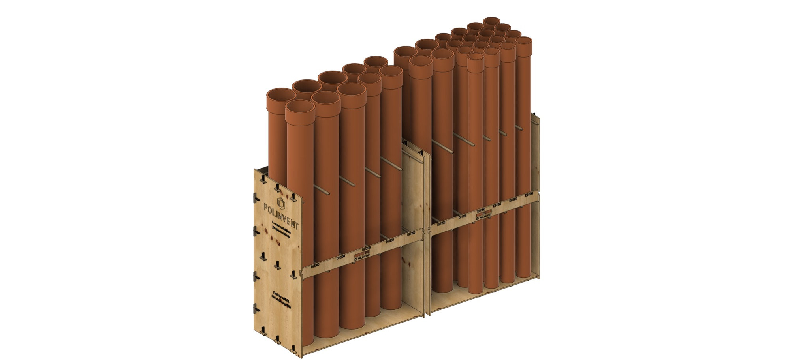
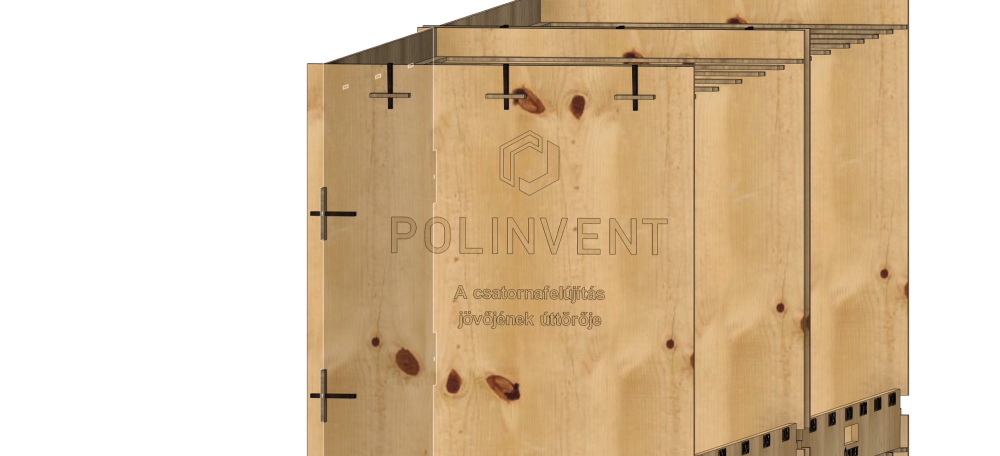
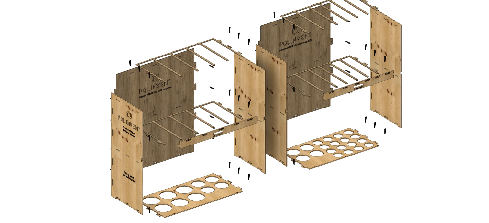
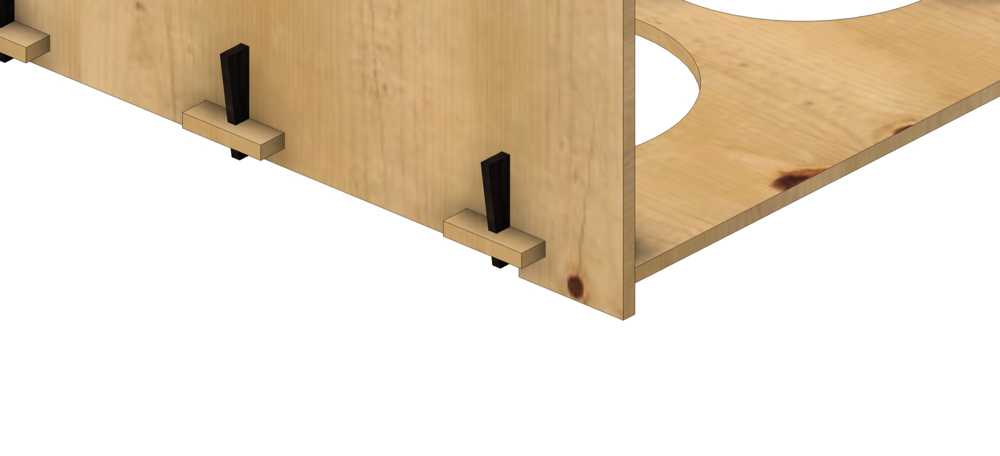
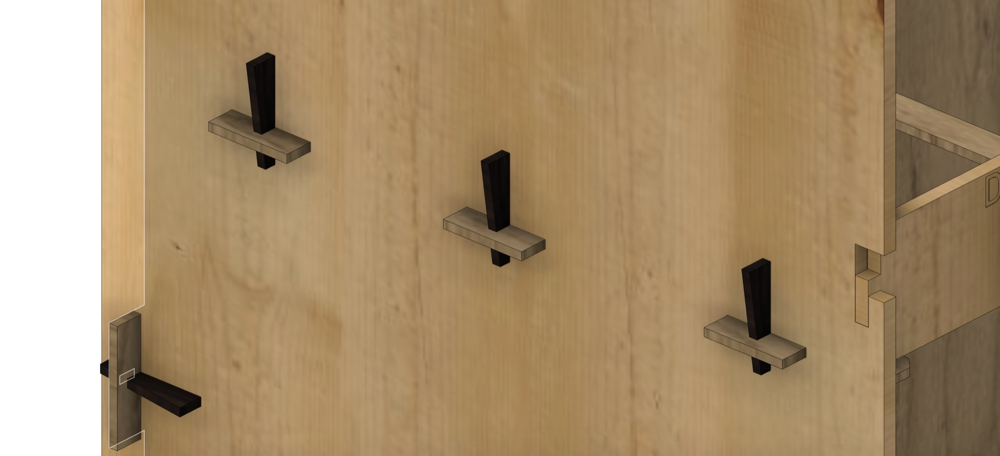
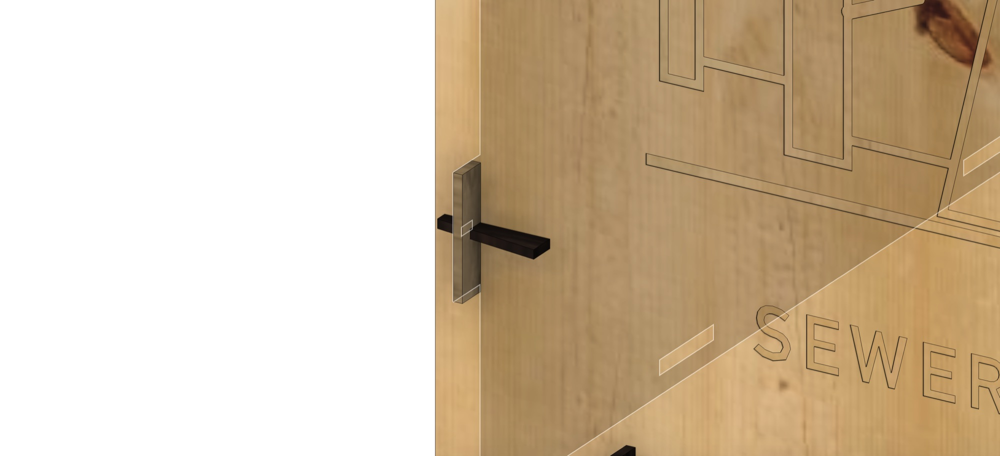
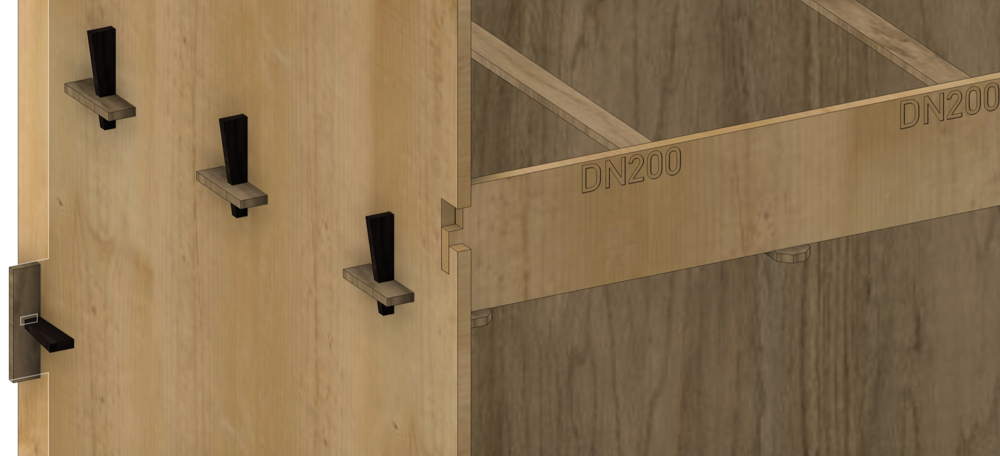
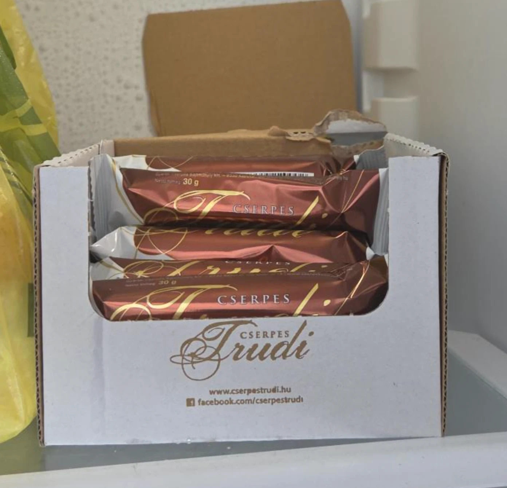

Screwed frame
Problem: 34 screws and nuts, separate base plate and foot rails, 8 sheets at 39% material use. The combs alone wasted 82% of a sheet.
8 sheets39%34 screws
AI CHALLENGE / 2026 · CLAUDE OPUS 5.5
A laser-cut plywood rack for our workshop, built for DN100, DN150 and DN200 KG pipes. Ordered, stable, and every pipe one move away.
01 / INTERACTIVE MODEL
Two modules, 14 plywood parts and 56 wedges. Drag to orbit, scroll to zoom, and switch the pipes on and off.
02 / HOW IT WORKS


03 / NEW IN V1.1
04 / VIDEO
A product film rendered entirely from code with Remotion and HyperFrames, cut to a 120 BPM track, with a neural voice-over.
VIDEO LOADING
05 / LANE LAYOUT
Nominal size / KG outer diameter: DN100 = Ø110 · DN150 = Ø160 · DN200 = Ø200 mm (source: idomok.hu, KG pipe catalogue).
06 / OUR PRODUCTS
PROJECT LOG
What we used, how we worked with the AI, where we got stuck and how we got past it.
AT A GLANCE
Parametric generator (shapely, trimesh, ezdxf, manifold3d) and a Fusion 360 script that rebuilds the same model natively.
Rendered from code: React + Three.js scenes and HTML/GSAP kinetic type, neural voice-over, music on the beat.
Static site with a live STEP/GLB viewer, published from GitHub.
In Claude Code, with two sessions running in parallel: one on the model, one on the website and video.
SKILLS & MCP
Before building, we had the AI read what the pros have already packaged as agent skills, and follow their rules.
Story beats, hook in the first seconds, motion and easing rules, sound design, what gives a generated film away.
Transitions, spring timing, audio ducking under voice-over, 3D scenes driven frame by frame.
Video and copywriting structure: problem → reveal → proof → claim → end card.
Patterns for web 3D with Three.js and Blender-to-web pipelines.
Searched for a ready CAD (Fusion) connector before choosing the code-driven route.
One session read the other's conversation to stay in sync; a browser tested every change live.
HOW WE TALKED TO THE AI
START“We need a PVC pipe rack for our workshop. We have 230 cm of length and max 70, ideally 60 cm of depth, for DN100, DN150 and DN200 pipes. They mustn't fall over, should be neatly lined up and quick to grab. Plywood, 4–10 mm, 1400 × 1400 sheets, laser cut — design it for assembly.”
QUALITY“Use skills that others have created if needed, so the design is as good as possible.”
WEBSITE“Several tabs, Product Team as the brand, the PT logo should spin. Take SpaceX as the base: professional, engineered.”
VIDEO“The video is dark and lame. Analyse real commercials and advertising and video skills on GitHub to make it better. The voice should be human.”
ITERATIONS
Problem: 34 screws and nuts, separate base plate and foot rails, 8 sheets at 39% material use. The combs alone wasted 82% of a sheet.
Fix: wedged through-tenons instead of screws, the base became the pipe seat, and the two combs were rotated 180° and nested into one sheet.
Tried: M10 threaded rods instead of plywood combs: 5 sheets, 66%, only 32 wedges. Rejected: it's no longer an all-wood rack, and it needs nuts and washers again.
Problem: the engraving has to face outwards on both end walls, but the walls were identical parts. Fix: separate outer walls, the left one cut mirrored, plus DN labels on the rail.
WHERE WE GOT STUCK
There was no Fusion 360 MCP in the registry or among the skills. Way out: the AI wrote a parametric Python generator for DXF and 3D, plus a Fusion script that rebuilds the model natively.
Way out: two independent modules side by side, 1150 and 1029 mm between the walls.
Socket down meant huge holes and only 3 DN100s per lane. Socket up lets the holes match the pipe and puts the sockets above the top comb. Result: 30 pipes.
The 3D viewer showed the rack completely black. Way out: the AI inspected the GLB file, found the surface normals missing and now computes them on load.
Way out: we analysed real product films and the official HyperFrames and Remotion skills, then re-cut it: a hook up front, a light look, cuts on the beat, music ducked under a neural voice.
The generator checks every part pair and that every wedge sits in its tenon. We tested it with a deliberate 1 mm error and it caught it. Result: OK · NO COLLISIONS
TIME TRACKING
We measured how long the project took. Active time is our questions, decisions and checks. In passive time the AI modelled, coded, rendered and published on its own while we worked in the other session.
passive time: how long the AI worked for us
our active work
passive, AI work
elapsed: two AI sessions ran in parallel
| Phase | Session | Active | Passive | Total |
|---|---|---|---|---|
| 3D model V1: parametric generator, DXF, collision check | Model | 0:14 | 0:18 | 0:32 |
| Screwless wedged joints, material optimisation (8 → 6 sheets) | Model | 0:11 | 0:52 | 1:03 |
| Fusion 360: assembly, STEP, exploded view, assembly drawing | Model | 0:19 | 0:31 | 0:50 |
| Website design and publishing on GitHub Pages | Web + video | 0:32 | 0:16 | 0:48 |
| First video (Remotion + HyperFrames), logging | Web + video | 0:09 | 0:16 | 0:25 |
| Updating content and website to the new model | Web + video | 0:13 | 0:07 | 0:20 |
| Ad research, English product film: music, voice, re-cut | Web + video | 0:11 | 0:24 | 0:35 |
Measured on 3 November 2026, 08:53–11:17, from the timestamps of both Claude Code session logs. Passive: from our request to the AI's last step. Active: from the AI's answer to our next request, capped at 15 minutes per turn. The two sessions ran at the same time, so overlapping active time is counted once in the total (1:49 by rows, 1:32 in reality).
ESTIMATE · IF WE HAD DONE IT BY HAND
How long would the same take without AI, for an experienced designer and developer? This is an estimate, not a measurement, using typical manual working times per task.
| Task | By hand (estimate) | With AI (measured) |
|---|---|---|
| Parametric 3D model: 14 plates, 56 wedges, tenon joints, collision check | ~12 h | 2:23 model session |
| Nesting onto 6 sheets, DXF layers, engraving | ~4 h | |
| Fusion 360 assembly, exploded view, A3 assembly drawing, BOM | ~6 h | |
| Website: 6 tabs, 3D viewer (STEP/GLB), responsive design, publishing | ~16 h | 2:07 web + video session |
| Video: two versions, 3D animation, kinetic type, voice-over, music | ~12 h | |
| Research and documentation | ~2 h | |
| Total | ~52 h · about 6.5 working days | 2:24 elapsed |
The two sessions ran in parallel, so elapsed time is less than their sum. The manual estimate assumes an experienced CAD designer and front-end developer, without learning time.
ATTACHMENTS
BOM, exploded view, cut-ready DXF sheets, 3D model and assembly drawing in one place.
01 / BOM
02 / EXPLODED VIEW

LOADING
03 / JOINTS
Fusion 360 renders of the joints. Every wedge sits in its own tenon, and the generator's collision check confirms it.




04 / LASER CUTTING
Layers: VAGAS (red, cut) · JELOLES (blue, engraved part name) · GRAVIR (engraving, fill) · TABLA (sheet outline, not cut).
05 / 3D & DOCUMENTATION
ROAD TO PRODUCTION
Nothing worked the first time. This is how we got past the hardest points.
We couldn't find a usable MCP connection for Fusion 360.
The AI wrote a parametric Python generator that produces DXF and 3D, plus a Fusion script that rebuilds the same model natively. Change one number and the whole model regenerates.
14 plates and 56 wedges with tenon joints. A wrong dimension would only show up after laser cutting.
Every run checks every pair of parts and that every wedge sits in its tenon. We tested it with a deliberate 1 mm error, and it caught it.
Model and website had to happen at the same time, on a tight deadline.
Two Claude sessions worked at once. The web session read the modelling session's conversation over MCP and worked from the same data.
LESSONS FROM OTHER BUILDS
Looking at similar laser-cut shelves, racks and furniture, the same mistakes came up again and again. We designed them out from the start.
“10 mm” plywood is often really 9.6 mm, and the laser takes 0.1–0.2 mm with every cut. A tenon drawn to nominal size is either loose or won't fit.
Slot clearance is its own parameter: 0.2 mm in thickness and 0.4 mm in length. After one test cut, a single number regenerates all 14 plates for the real sheet.
A screw driven into the edge of plywood splits it along the layers, and it loosens every time you reassemble.
The tenon passes 20 mm through the wall, and a wedge that widens from 8 to 18 mm goes into its slot. Tapped in, it pulls the joint tight. It comes apart without tools, and the wedges are cut from the same sheets.
A 1350 mm plate standing on its full edge never sits flat on an uneven concrete floor, so the rack rocks.
An 8 mm relief is cut into the bottom of the side walls and the back panel, so the rack stands only on the feet at each end. Clear contact points, no wobble.
A comb open at the front makes pipes quick to take out, and just as quick to tip out. Locking them usually slows access down.
A rail sitting in an L-shaped slot: lift it 20 mm and it unhooks; let go and it drops back under its own weight. A centre peg rests between the comb fingers, and a hand-hole makes it one-handed.
In laser-cut projects, half the sheet often ends up as scrap. Our first layout needed 8 sheets at 39% use, and 82% of the comb sheet would have been waste.
The two combs, rotated 180°, slide into each other's fingers on one sheet. The walls lost their unnecessary windows, and the base replaced the foot rails. Result: 6 sheets, 64% use, and shorter laser time.
FROM SCREEN TO WORKSHOP WALL
Design, files and measurements are done. The next and only remaining step before assembly is cutting the six sheets.
Python generator, Fusion script, collision check, three iterations.
6 sheets as DXF with engraving, Fusion 360 assembly, STEP, A3 assembly drawing with BOM.
Pipe sockets and real plywood thickness checked against the generator parameters.
One test tenon and wedge first, then the six sheets: 3 × 10 mm and 3 × 6 mm plywood on a 100–150 W CO₂ laser with a 1400 × 1400 mm bed.
Tenons of base, combs and back panel into the side walls → tap in the wedges → hook the front rail into its L-slots. Per module, no tools, no glue.
The two modules stand side by side against the wall. Then in go the pipes.
No screws, no nails, no glue, no brackets. Every part, including the 56 wedges, is cut from the same six plywood sheets. We're proud that it's 100% wood.
SPONSORS
Nobody paid us. But a project like this doesn't run on AI alone.
Powered every design review, every re-render and every “one more iteration”.

Kept in the office fridge, emptied faster than the laser can cut. The only thing in this project that isn't made of wood.
Unofficial sponsors: no money changed hands, just calories. Brand names belong to their owners.
ABOUT US
Shared idea. Our own design. We're a small team, and in this AI Challenge we show how you can learn something completely new in a few days: from 3D design through video to a live website.
From a real problem to a manufacturable 3D model.
A short film that shows how it came together.
Everything in one place, openly: files, log and lessons learned.
CONTACT